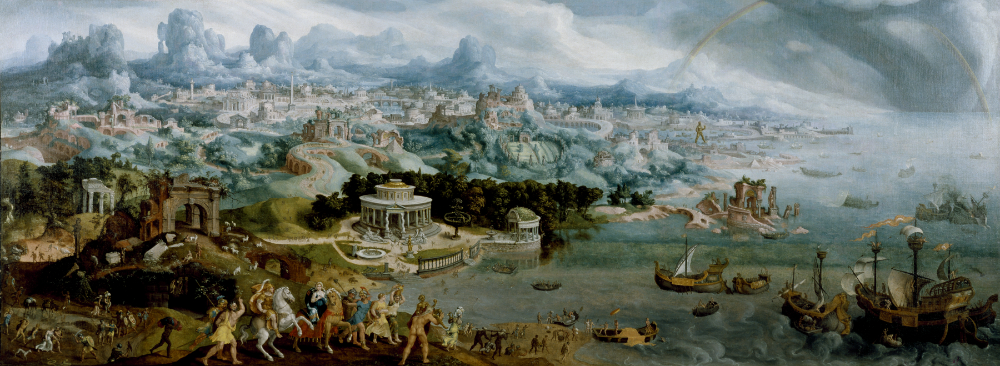

The Seven Wonders of the Ancient World Remarkable constructions of classical antiquity almost completely lost in time.
The Seven Wonders
Great Pyramid of Giza

- Date of construction:
- 2584–2561 BC
- Builders:
- Egyptians
- Location:
- Giza Necropolis, Egypt
Hanging Gardens of Babylon

- Date of construction:
- Circa 600 BC
- Builders:
- Babylonians
- Location:
- Nineveh, Iraq
Temple of Artemis
- Date of construction:
- Circa 550 BC
- Builders:
- Greeks
- Location:
- Selçuk, Turkey
Statue of Zeus at Olympia

- Date of construction:
- 435 BC
- Builders:
- Greeks
- Location: s
- Olympia, Greece
- Date of construction:
- 351 BC
- Builders:
- Persians
- Location:
- Bodrum, Turkey
- Date of construction:
- 292–280 BC
- Builders:
- Greeks
- Location:
- Rhodes, Greece
- Date of construction:
- Circa 280 BC
- Builders:
- Ptolemaic Egyptians
- Location:
- Alexandria, Egypt
Mausoleum at Halicarnassus

Colossus of Rhodes

Lighthouse of Alexandria

Buy Tickets
Come explore the ancient wonders with our amazing teleportation technology that jumps you around the world.
Become a member
Is one visit not enough? Join our yearly program for unlimited access.
Now playing on the large screen
Atlantis: Why were so mysterious From allegory to fiction to mystery
This week at the museum
- Atlantis city tours Underwater explorer: see outside the bubble
- Try this out: have fun building your own ancient wonder Amazing architecture: explore the science of how the pyramids were built
- Awesome art: witness art in action as a marble sculpture is born Gold rush: learn about the metal and why it was so coveted
- Try this out: wear clothes that the ancients wore Gardenology: learn to plant and maintain amazing gardens
- Amazing architecture: explore the science of buildings Gardenology: the science behind trees and the environment
- Atlantis city tours Awesome art: witness a full mosaic floor under construction